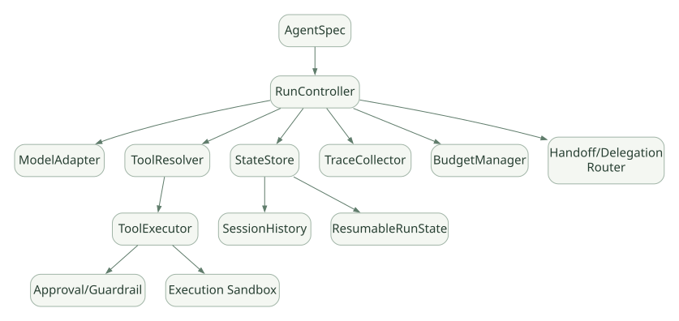

SECOND STUDY / 관측과 자체 설계
관측과 자체 설계
이번 단원의 읽는 관점
Trace와 평가를 구분하고 인터페이스별 비용과 운영 통제를 비교합니다.
살펴볼 경계Mock 기반 Loop 검사와 실제 Wire/API 검증은 다른 증거입니다.
이 페이지의 세부 목차
Part VIII. 평가, 운영 보안과 자체 Framework 설계
40. Observability: 무엇을 남겨야 하는가?#
최소 다음 항목은 분리해서 기록한다.
| 기록 항목 | 유용한 질문 |
|---|---|
| Run ID / Session ID / Agent 이름 | 어떤 실행이 어느 사용자·대화의 것인가? |
| Model 호출 메타데이터 | 모델·설정·토큰·지연 정보는? |
| Tool Call ID / 인자·응답 형태 | 어떤 함수가 어떤 이유로 실행되었나? |
| Handoff 시작·종료 | 누가 제어권을 넘겼나? |
| Guardrail/Approval 결과 | 차단·승인 정책이 적용되었나? |
| RunState snapshot/version | 어디서 멈췄고 어떻게 재개했나? |
| 외부 Tool 부작용·Idempotency ID | 중복 실행과 실제 변경을 추적할 수 있나? |
| Prompt Cache/Compaction | 캐시 재사용과 입력 변화가 있었나? |
SDK에는 Trace/Span 기반 실행 관측 기능이 있다. 다만 기본 Tracing은 민감한 모델 입력·출력과 Function 인자·결과를 기록할 수 있다. 공식 문서에 따르면 trace_include_sensitive_data의 기본값이 True일 수 있으므로 민감한 업무 환경에서는 반드시 먼저 검토해야 한다. [DOC: D16]
40.1 Tracing은 곧 Evaluation이 아니다#
- Tracing: 무엇이 어떻게 실행되었는지 관측.
- Evaluation: 주어진 목적을 얼마나 잘 달성했는지 평가.
- Monitoring: 운영 중 비용·실패율·지연시간 추적.
- Audit: 권한·승인·데이터 처리의 추적 가능성.
실행 경로가 모두 기록됐다고 판단이 정확해지는 것은 아니다. 정답률, Tool 선택 적절성, 불필요한 반복 호출, 근거 신뢰성은 별도의 평가 지표가 필요하다.
41. 코드 기반 테스트 전략: 모델 호출 없이도 Loop를 검증할 수 있다#
공식 agents.testing은 ScriptedModel, ModelStep, assistant_message(), function_call() 같은 Deterministic Test 도구를 제공한다. 정규화된 Model 인터페이스를 교체해 Runner 자체의 Tool, Handoff, Session, Streaming, Retry를 검증할 수 있다. [DOC: D17]
# [PSEUDO] 테스트 아이디어. 실제 Test API 호출을 완성한 실행 예제는 아님.
scripted_model = [
ModelOutput(function_call="lookup", args={"id": "x"}),
ModelOutput(final_text="done"),
]
result = await Runner.run(agent_using(scripted_model), "query")
assert_called_once("lookup")
assert result.final_output == "done"위 예제는 테스트 아이디어를 표현한 의사코드다. 실제 라이브러리 함수와 객체 형태는 [D17]의 ScriptedModel 예제를 참고한다.
41.1 코드 단위에서 반드시 재현할 테스트(후속 연구 계획, 현재 미실행)#
- Tool 없이 한 번에 Final 출력.
- 한 모델 응답에서 Function Tool 2개 실행.
- Tool 한 개 실패와 다른 Tool이 취소되는 상황.
- Handoff 이후 최종 Agent가 다른 경우.
- Input Guardrail 병렬 모드에서 차단 발생.
- Input Guardrail 차단형 모드에서 Tool 실행 0회 확인.
- Tool Input/Output Guardrail의 실패 경로.
RunState로 중단→승인→재개, 동일 Tool 중복 실행 여부.- Handoff 뒤
input_filter와 Session 기록 비교. - Stream Iterator 조기 종료/Cancel 후 백그라운드 Task 상태.
- Model Retry와
max_turns의 상호작용. - Compaction 전후 모델 입력 View의 정합성.
Mock Test의 한계: Scripted Model 테스트가 성공해도 실제 모델이 정확히 같은 Tool을 선택하거나, 로컬 vLLM의 Tool Calling 형식이 일치한다는 뜻은 아니다. API Wire Format은 실제 Adapter 및 통제된 네트워크 경계로 별도 테스트해야 한다. [DOC: D17]
42. 자체 Agent Framework를 설계한다면 필요한 최소 컴포넌트#
가로로 이동해서 읽을 수 있습니다. 도식 크게 보기 ↗

원문의 학습용 도식입니다. 연결 방향·분기 조건·점선·쌍방향 연결을 보존해 세로로 배치했습니다. 실제 구현·의사코드·해석의 구분은 본문을 함께 읽으세요.
도식 원문 보기 (Mermaid)
flowchart TB
A[AgentSpec] --> B[RunController]
B --> C[ModelAdapter]
B --> D[ToolResolver]
D --> E[ToolExecutor]
E --> F[Approval/Guardrail]
B --> G[StateStore]
G --> H[SessionHistory]
G --> I[ResumableRunState]
B --> J[TraceCollector]
B --> K[BudgetManager]
B --> L[Handoff/Delegation Router]
E --> M[Execution Sandbox]이것은 OpenAI SDK의 실제 클래스 다이어그램이 아니라 7개 Agent 시스템에서 공통 구조를 비교하기 위한 개념 설계다. [INF]
42.1 인터페이스 경계를 선택하는 기준#
| 경계 | 중요한 질문 | 잘못 설계하면 |
|---|---|---|
| Model Adapter | Tool/Streaming/JSON 호환성을 어디서 처리? | 제공자 변경 시 Core Loop 대량 수정 |
| Runner Core | 종료 조건과 상태 전이를 어디서 관리? | 예외 분기 누락·무한 반복 |
| Tool Registry | 승인/인자 검증을 한곳에서 강제? | 우회 경로와 중복 구현 |
| Session Store | 모델 입력과 저장 View를 분리? | Handoff/Approval 기록 소실 |
| RunState | Resume에 필요한 상태를 무엇까지 보존? | Tool 중복 실행·불완전 재개 |
| Guardrail | 차단형/병렬형 정책이 명확? | 위험 작업이 검사보다 먼저 실행 |
| Concurrency | 공유 상태/순서/취소 범위가 명확? | Race condition·불완전 정리 |
| Sandbox | 모델과 OS 실행 권한 경계 존재? | 기밀 노출·파일 변조 |
| Streaming | 소비자 종료와 Run 종료를 분리? | 보이지 않는 백그라운드 실행 |
43. 설계 Trade-off를 도출하는 프레임#
기술 선택에는 항상 이득과 비용이 함께 있다.
43.1 경량 Runner vs 명시적 Graph Runtime#
- Runner 기반: 모델 응답에 따라 Tool/Handoff/Final을 반복하는 구조가 이해하기 쉽고 빠르게 구현 가능.
- Graph 기반: 미리 정의된 전이, 복잡한 Workflow, Checkpoint를 명시적으로 표현하기 유리할 수 있음.
- 절충안: Agent 내부 의사결정은 Runner, 업무 순서·승인은 코드 Workflow로 관리.
43.2 모델에게 위임 vs 코드가 위임 결정#
- 모델 결정: 자연어의 다양한 상황에 대응하지만 경로가 변동적.
- 코드 결정: 재현성과 관리 편의성이 높지만 동적으로 변하는 상황을 예외 규칙으로 처리해야 할 수 있음.
43.3 요청 중 모든 작업 완료 vs Job Queue#
- 동기 실행: 운영 단순, 실패 확인 용이, HTTP Timeouts 제약.
- 비동기 Job: 장기 실행에 유리, 상태 저장·재시도·중복 실행 정책이 필요.
43.4 메모리 자동 요약 vs 명시적 도메인 데이터 저장#
- 자동 요약: 개발 부담 감소, 정보 누락·오해 위험.
- 구조화 기록: 검증/감사 유리, 설계·운영 비용 증가.
43.5 병렬 Tool vs 순차 Tool#
- 병렬: 지연 감소 가능, 실패·취소·순서·동기화 복잡성 증가.
- 순차: 데이터 의존성이 있는 작업에 안전, 지연시간 증가 가능.